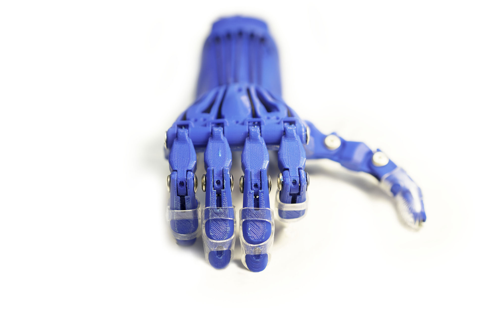
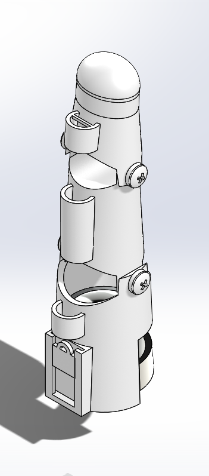
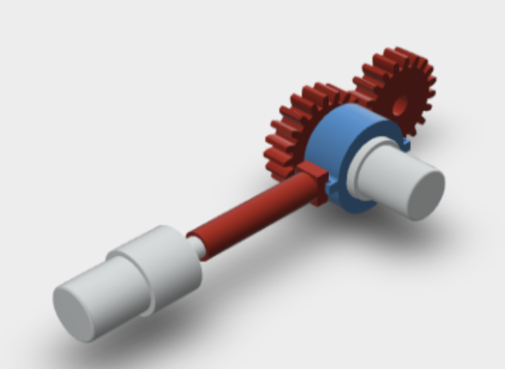
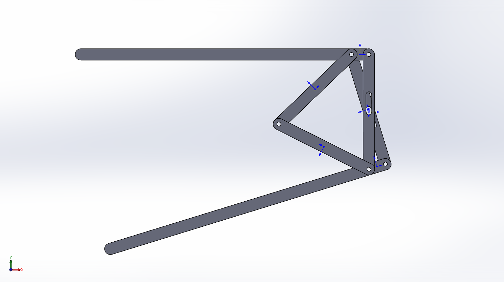

About
My vision is to create new opportunities for the human body to excel using the all-encompassing world of STEAM. Currently, I am a senior at Worcester Polytechnic Institute pursuing a B.S. in Mechanical Engineering with a Biomechanics concentration. As an engineering student and an avid art enthusiast, being a woman of STEAM comes naturally to me. My goal is to expand the body's potential through design that not only works well, but is also dressed for the part.
Research & Design
Human Augmentation Lab (H.A.L.)
My experiences in prosthetic design began with Enable Community Foundation, a global network of individuals who are using 3D printers to create low cost hands and arms for those in need. As a freshman at WPI I founded the Human Augmentation Lab (H.A.L.), a student-run organization that runs parallel to ECF's mission and goals. Since its founding, I have led an effort to analyze existing 3D printed open source hands and arms. It became clear during the research process that most hands and arms available in the 3D printing realm were not sufficient for daily activity, and that there was a gap to address. Under funding from the Kern Entrepreneurship Education Network (KEEN) innovation grant, I have led my team to create a hand that can be utilized regularly for activities of daily living.

Existing 3D Prosthetics
Through research the H.A.L team has performed over the past two years, we have concluded that open source 3D hands currently available through organizations such as Enable Community Foundation do not have the pinching strength necessary for an active child or adult. Due to the low pinching strength of the string tension the hands are not able to provide task flexibility. Furthermore, in the many various designs using string tension, there has been little improvement in how much force the hand can actually withstand. Most 3D prosthetics have very few functions other than being cosmetically pleasing, if that.
Prosthetic Finger Design
To evaluate improvements on the pinching strength of the widely used actuating process of cables and tension used in 3D printed prosthetics hand designs, I created a small-scale design of a prosthetic finger. I varied the size of this design and used the actuating system as the dependent variable, which allowed me to evaluate new ways in which the system could be manipulated. During this creation process, I also focused on eliminating non-functional cosmetic elements.


The Helping Hand
After careful evaluation of open source hands such as The Raptor Reloaded, The Lucky Paw, and The Not Impossible Hand to name a few, it became evident that the 3D designed prosthetics currently available on the market do not have the versatility needed to perform activities of daily living. The Helping Hand, a reaction to the lack of high functioning low cost prosthetics, will be distal to the elbow and proximal to the wrist that will allow the circumduction, pronation, and supination motions to perform daily tasks, all while being affordable. Currently, there is no 3D printed prosthesis that provides these three motion capabilities that is affordable.
Further Projects
The increasing ageing population frequently suffers from knee joint degeneration. This demographic has limited access to preventative injury solutions due to the high costs of medical devices, thus impacting range of motion, independence, and safety. Assistive exoskeletons are widely known as a solution to combat pain occurring in mobility tasks. Typically, these devices are designed for a general population and then fit for each patient. In response, this project aims to develop a low cost, customizable assistive knee exoskeleton for increased quality of life. We will develop software to use medical imaging scans to customize 3D models. The software will automatically extract the parameters of a patient's knee, such as cartilage density, diameter, and bone mass. This data will be input into a SolidWorks model, which will produce 3D printed parts for a patient specific exoskeleton. Active components of the device will be chosen according to the biomechanics of the knee. Effectiveness will be measured by conducting a gait analysis with and without the device.
